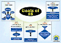
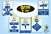

About Japanese Management System
Japanese Management Concepts
The Japanese economy was totally devastated after the World War II. The country's turnaround strategy to revive its economy was largely influenced by the Management Philosophy that emerged in Japan. The strong pillars of Japanese Management are Concern for Customers to the extent of putting him on the pedestal of God, Control of the Access of Cost, Quality and Time (Wastage elimination, JIT, TQM, TPM, DOE, Poka Yoke, Kanban, SMED etc.), Excellence in all areas (5-S, Kaizen, Poka Yoke) and Total Employee Involvement. Underlying principle embedded in all these is recognition of the need to satisfy all stakeholders. These Management Principles developed in Japan are gaining wide currency all over the world, and practises by industry, business and governments because of the enormous power of these concepts that can make any organisation highly successful.
About Shigeo Shingo

Shigeo Shingo's life-long work has contributed to the well being of everyone in the world. Shigeo Shingo along with Taiichi Ohno, Kaoru Ishikawa and others has helped to revolutionise the way we manufacture goods. His improvement principles vastly reduce the cost of manufacturing - which means more products to more people. They make the manufacturing process more responsive while opening the way to new and innovative products with less defects and better quality.
He was the first to create some of the strategies on continuous and total involvement of all employees. Shingo's never-ending spirit of inquiry challenges the status quo at every the first to create some of the strategies on total involvement of all employees. Shingo's never-ending spirit of inquiry challenges the status quo at every level- he proposed that everything could be improved. Shingo believed that inventory is not just a necessary evil, but all inventory is absolute evil. He is one of the pioneers of change management. He brought about many new concepts such as ZD (Zero Defects), shifting use of statistics for acceptance or rejection from SQC (Statistical Quality Control) to SPC (Statistical Process Control), SMED (Single Minute Exchange of Dies), POKA-YOKE (mistake proofing), Defining Processes & Operations in two-dimensions of VA (Value Addition) and non-VA, etc.
We believe that naming the Institution after this great thinker in modern management would not only be a tribute to his farsighted revolutionary management spirit, but also enable students to understand and imbibe better manufacturing management capabilities.
About Us
Fascinated by the Japanese Management concepts, that helped them in taking their own organisations from strength to strength in the case of successful ones and lifting them from the doldrums in the case of sick and unprofitable outfits, a team of management professionals came out with the idea of propagating Japanese Management tools and techniques in Indian organisations. Not that the Japanese management techniques are unknown in India, but they remain at the intellectual levels in the minds of a few managers, not extending to the entire organisation. The need for making them part of the day to day working of these companies was recognised. This idea triggered promoting Shingo Institute of Japanese Management.
Shigeo Shingo, formerly of Toyota Motors was the author of many powerful modern Management Techniques, developed and applied in Toyota Motor Company. These include among others Zero Defects, Poka - Yoke (Mistake-Proofing), Shift from acceptance or rejection of components based on Statistical Quality Control to improving their quality through Statistical Process Control, Single Minute Exchange of Dies (SMED) etc. One of the important concepts developed by him was the separation of the various activities in any organisation in the two dimensions of Value Addition and Non-Value Addition.
It was decided to name the Institute after this eminent Management expert, for which his family members' concurrence was obtained. The Institute was jointly promoted by K S Madhavan & Associates, a Management Consultancy firm and Asa Bhanu Japan Centre, a voluntary organisation propagating Japanese Language, Arts and Culture in Andhra Pradesh.
The Institute established in the year 2001 has been mainly engaged
in conducting workshops and teaching holistic management to students.
It launched its first Post Graduate Diploma programme in Japanese
Management in January 2002. Both Certification Courses and PG Diploma Courses are now available as Distance Learning courses. It is open to Graduates in Arts, Science,
Commerce and Engineering. The first two batches of Students were mostly working Executives with some Students just graduated. Certification Course will be of THREE MONTHS EACH and PG Diploma course will be of TWO SEMESTERS, both with real time projects. Details are given elsewhere.
The Institute also publishes books and posters on Japanese Management concepts. Presently we have books on 5S and Key Result Areas, as well as on Business Ethics. Pocket books on 5S and posters are available in many Indian languages.
VISION:
To develop managers of global competence using holistic management systems to maximize benefits to society.
MISSION:
To help internalize principles of holistic management in current management practices for organizational excellence.
OBJECTIVES:
To impart education and training to students of management in the holistic management systems and tools that have redefined and revolutionized the whole concept of industrial management in Japan, along with the other conventional modern management concepts.
TO INCULCATE -
Faculty
Faculty Members associated with the Institute are qualified Management Professionals who have rich experience in teaching and consultancy. They have experience in implementing Japanese Management Systems and Tools. Senior faculty from leading management schools are invited to address. teach and guide our students. The brief profile of present faculty is given below.
- Dr. AV Srinivasan
- Ravindra Kalur
- D P Mehta (former MD of private companies like MCF and management expert)
- G Natarajan
- P M Devarajan
- Balasubramaniam Srinivasan
- G.Balu
- Visweswara
- KS Madhavan
And faculty associated with Indian Heritage Academy
Courses Offered
3 months / 6 months with interactive sessions of 1 week / 2 weeks followed by practical experience in related work and examination.Workshops and Seminars
- Poka Yoke - Mistake Proofing
- Total Quality management (TQM)
- Creativity
- Six Thinking Hats
- Total Employee Involvement (TEI)
- Vedic Philosophy & Principles of Management
- Business Ethics
- Leadership
- Change Management
- Team Building
- Failure Mode Effect Analysis (FMEA)
- Pre - JIT
- Key Result Areas (KRAs)
- Lean Manufacturing
- 5S (Workplace Excellence)
- Total productivity Maintenance (TPM)
- Six Sigma
- Cost management
- Balanced Score Card
- Design of Experiments
- Design Review
- Environment management
- Japanese management Techniques
- Kaizen / Gemba Kaizen– Continuous Improvement
- Single Minute Exchange of Dies (SMED)
Workshops and Seminars Held by Us
- A 3-day Workshop on “Poka-Yoke” at ESCI in
October, 2008.
- One day Workshop on “Cost Management & Control
in Competitive Environment” at Nawa Engineers &
Consultants (P) Ltd., Hyderabad in May, 2008.
- A 2-day Workshop on “Leadership” at AREVA,
Kolkata in January, 2008.
- A 2-day Workshop on “Lean Management” at DRL
in November, 2007.
- A 3-day Workshop on “Poka-Yoke” at ESCI in
October, 2007.
- A 3-day Workshop on “Lean Manufacturing” at
Dr. Reddy’s Laboratories Ltd. (DRL), Hyderabad in
August, 2007.
- A 3-day Workshop on “Key Result Areas” for
NHDC Employees at Bhopal in June, 2007.
- A 3-day Workshop on “Key Result Areas” for
NHDC Employees at Indore in May/June, 2007.
- A 3-day Workshop on “Key Result Areas” for
Senior Management of NHPC at Faridabad in March, 2007.
- A 3-day Workshop on “Poka-Yoke” at ESCI in
October, 2006.
- A 3-day Workshop on “Poka-Yoke” at ESCI in
May, 2006.
- One-Day Workshop on Team Building for Microsoft (R&D)
India Ltd. in April 2006.
- A 3-day Workshop on “Poka-Yoke” at ESCI in
April 2005.
- A 3-Phase Workshop on “Pre-JIT” in association
with AOTS and Shingo Institute of Japanese Management at
The Manohar, Hyderabad in December, 2004.
- Workshop on “5-S” at the Institution of Engineers
(India), Hyderabad.
- A 3-Day Workshop on “Failure Mode Effect Analysis”
in December, 2003 for Bajaj Auto Ltd., Pune for their employees
at their Chakan Plant.
- Workshop on "Team Building" at Ramoji Film City,
Hyderabad in April, 2003.
- Poka Yoke workshop conducted For Satyam Computers Ltd.
professionals
- Workshop on “Change Management” at Baroda
for Gujarat Electricity Board in October, 2002.
- Workshop on "Leadership" at Ramoji Film City,
Hyderabad in October 2002.
- Workshop at the Institution of Engineers (India), Hyderabad
in September 2002 on "Small Scale Industries in Globalisation
Scenario".
- Workshop on “Lessons of Power Sector Reforms in
India” to the Senior Executives of Power Grid Corporation
at ASCI, Bellavista, Hyderabad.
- Workshop for the General Managers of BHEL, Hyderabad,
in August 2002 on “Business Ethics” and “Leadership”.
- Conducted several lectures on Vedic Philosophy & Principles
of Management in Rotary clubs, Management Associations etc.
- Workshop on Six Thinking Hats for Management of Vasant
Chemicals in June 2001.
- Workshop on TEI for APIC employees in July 2001.
- Workshop on TQM for “Eureka Forbes” Management
& Vendors in April 2001.
- A two-day seminar on Six Thinking Hats for VST Management
in August 2001 at Hotel Viceroy, Hyderabad.
- A two-day Workshop for professionals on “Creativity
Unlimited” at Hyderabad in August 2001.
- TQM seminar for Sr. IAS officers of the Four Southern
States at Dr. MCR- HRD Institute during February 2001. This
seminar focussed on creating TQM awareness in public servants.
- Poka Yoke workshop conducted in May, 2002 at Shingo Institute
of Japanese Management, which is our sister concern for
Sr. Management professionals.
Our People
Principal Consultant
Chief Consultant: Hyderabad
Associate Consultants
- A.V.Srinivasan: Associate Consultant
- Mr. Darius P. Mehta: Associate Consultant
- Mr. R Srinivasan: Associate Consultant
- Mr. G Natarajan: Associate Consultant
- Mr. P M Devarajan: Associate Consultant
We conduct focused in-house and external Workshops and Seminars on various themes on an ongoing basis:
Our Clients
Some of our important clients, for whom we have carried out / still carrying out consultancy assignments are listed below: -
- Gujarat Urja Vikas Nigam Ltd. (Gujarat Electricity Board) Baroda
- Gujarat State Electricity Corp. Ltd.(GSECL)
- Gujarat Energy Transmission Corp. Ltd.(GETCO)
- Uttar Gujarat Vij Company Ltd. (UGVCL)
- Dakshin Gujarat Vij Company Ltd. (DGVCL)
- Madhya Gujarat Vij Company Ltd. (MGVCL)
- Paschim Gujarat Vij Company Ltd. (PGVCL)
- Dr. Reddy’s Laboratories Bulk Actives Unit V.
- Nagarjuna Fertilisers and Chemicals, Ltd, Hyderabad & Kakinada.
- Mangalore Chemicals & Fertilisers, Ltd, Mangalore.
- ITC, Bhadrachalam Paper Boards, Ltd, Bhadrachalam.
- Saint-Gobain Vetrotex (India), Ltd, Hyderabad,
- Elpro International Limited, Hyderabad.
- Rane Engine Valves Ltd, Medchal, Hyderabad
- Rane Brake Linings Ltd., Hyderabad
- Navabharat Ferro Alloys Ltd., Sugar Plant, Samalkot, AP
- Navabharat Ferro Alloys Ltd., Ferro Alloys Divn., Paloncha, AP
- Navabharat Ferro Alloys Ltd., Ferro Alloys Divn., Dhenkanal, Orissa.
- Praga Tools Ltd., Hyderabad.
- Assam State Electricity Board, Guwahati
- Nicholas Piramal India Ltd., Zaheerabad, A.P.
- Lokesh Machines Ltd., Hyderabad
- Aurangabad Auto Engg. Products Ltd., Aurangabad
- Chattisgarh state Electricity Board
- Indian Immunologicals Ltd.
- Asa Bhanu Technical Services Ltd., Hyderabad.
- GMM Pfaudler Ltd., Karamsad, Anand Dist., Gujarat
- Integrated Cleanroom Technologies Ltd, Hyderabad
- Gujarat Energy Development Agency, Vadodara
- Bharat Heavy Electricals Limited, Hyderabad
- Denison Hydraulics India Ltd., Patancheru
- Dr. Reddy’s Laboratories Ltd., CTO-Units I, II & III, Hyderabad
- Tribi Systems Pvt. Ltd.
- NTPC National Thermal Power Corporation Ltd.
- GAIL Gas Authority of India
- Allison Transmission Ltd., Chennai
- POWER GRID CORPORATION, BANGALORE
With most of them we are focussing on removing their weaknesses
/ sickness and making them competitive through 5S, TPM, TQM,
KRA and Six Sigma exercises and generally transforming the
organisation.
Shingo Institute of Japanese Management
Also, in order to impart holistic management training and education to professionals from various disciplines, Shingo Institute of Japanese Management was established.Shingo Institute provides education and training in Total Quality Management, Total Productive Maintenance, Design of Experiments, 5S, TEI ect.DFS (Design for Sustainability) and awards Post graduate Diploma in Japanese Management as also Certificates in specific areas like Poka Yoke ,SMED,FMEA, DR, SPC etc. in addition to TQM, TPM, DOE, 5S, TEI and DFS.
For further details, you may please contact us at the address given below.
Shingo Institute of Japanese Management
#683, Shri Ranga, 10th Main Road,
4th Block, KORAMANGALA,
BANGALORE, India.
Pin Code: 560034
URL: www.shingo.institute
E-mail: info@shingo.institute
AMC Trust - Conquering Fear Of Cancer
AMC Trust is a non - profit NGO focussed on complementary
therapies in cancer management. It is dedicated to improving
the quality of life of cancer patients, and wherever possible
regression of cancer, using them as adjuvant therapies, combining
yoga, homoepathy, ayurveda etc. With mainline allopathic treatments
like chemotherapy and radiotherapy. While improving the Quality
of life, the cost of cancer treatment also comes down.
Hundreds of patients have utilized the services of the trust
and its panel doctors and benefited.
AMC Trust
#683, Shri Ranga, 10th Main Road,
4th Block, KORAMANGALA,
BANGALORE, India.
Pin Code: 560034
URL: www.cancerhope.org
E-mail: cure@cancerhope.org

Indian Heritage Academy
Promoted by Prof. N S Ramaswamy, Founder of IIM Bangalore and active in promotion of Indian Heritage and cultural values, as also environment management.
Koramangala 6th Block,
BANGALORE, India.
Pin Code: 560095
AOTS Alumni Society - AP Chapter
(Association of Overseas Technical Scholarship, Tokyo, Japan)
President Mr. Ravindra Kalur & Secretary General / Mr. Kishore Mocherla
President Mr. Ravindra Kalur & Secretary General / Mr. Kishore Mocherla
46, Lane-1, Street Number 3,
West Marredpally,
Secunderabad
Pin Code: 500026

SyzygyQuest Marketplace Solutions Private Limited
Indian Heritage Academy
Koramangala 6th Block,
BANGALORE, India.
Pin Code: 560095
Happenings
Recent Ones
- For the first time in India HIDA associated with the Ministry of External Affairs, Japan sent trainees to many organisations in India. Shingo Institute was one such organisation among the organisations from different parts of India.
- We are re-starting our Certification programmes in Japanese Management both in Hyderabad and Bangalore in association with AOTS-AP and IHA.
- International Seminar on "Lessons to be Learnt from Japan 03/11 Triple Disaster" conducted in collaboration with AOTS Alumni Society-AP in April 2011.
- TQC programmes for NTPC at Ramagundam.
- 5S Evaluation programmes for NTPC Southern Region.
- QCC guidance to senior employees of GAIL, enabling achievement of tangible results.
- Programmes for professionals in Holistic management, the Japanese Way, in association with Heritage Academy.
For older happenings, please contact Shingo Institute
5S Pocket Book
Explaining what 5S can do for you and how you can implement it without hassles
- ISBN-978-81-906715-0-7
- Price: INR 150 /- US $ 10
- 5S Pocket Books in Regional language - Price: INR 200 / US $ 10
- 5S Pocket Book- Soft copy - Price: INR 500 / US $ 25
- Book Size: "5.5"; x "4";
- Available in English, Hindi, Telugu, Kannada, Tamil,
Marathi& Bengali - Pages : 80
- Author : K.S. Madhavan
Download Brochure for 5S Books
Buy Here
You can buy Books and posters directly through e-transfer.
For details contact + 91 90084 58533
5S Comprehensive Book
Covering all aspects of 5S for All Kinds of Organizations
- ISBN-978-81-906715-1-4
- Price: INR 600 /- US $ 20
- 5S Comprehensive Book- Soft copy - Price: INR 1000 / US $ 35
- Book Size: 10.5"; x 7.5";
- Pages : 218
- Author : K.S. Madhavan
Download Brochure for 5S Books
Buy Here
You can buy Books and posters directly through e-transfer.
For details contact + 91 90084 58533
5S Posters in English


Download Brochure for 5S Books
Buy Here
You can buy Books and posters directly through e-transfer.
For details contact + 91 90084 58533
5S Posters in Hindi

 Download Brochure for 5S Posters in Hindi
Buy Here
You can buy Books and posters directly through e-transfer.
For details contact + 91 90084 58533
5S Posters in Tamil


 Download
Brochure for 5S Posters in Tamil
Download
Brochure for 5S Posters in Tamil
Buy Here
You can buy Books and posters directly through e-transfer.
For details contact + 91 90084 58533
5S Posters in Marathi


 Download
Brochure for 5S Posters in Marathi
Download
Brochure for 5S Posters in Marathi
Buy Here
You can buy Books and posters directly through e-transfer.
For details contact + 91 90084 58533
5S Posters in Kannada


 Download
Brochure for 5S Posters in Kannada
Download
Brochure for 5S Posters in Kannada
Buy Here
You can buy Books and posters directly through e-transfer.
For details contact + 91 90084 58533
5S Posters in Telugu
Download Brochure for Saftey Posters
Buy Here
You can buy Books and posters directly through e-transfer.
For details contact + 91 90084 58533
Safety Poster

Download Brochure for 5S Posters in Telugu
Buy Here
You can buy Books and posters directly through e-transfer.
For details contact + 91 90084 58533
My Tryst with Cancer.
ISBN-978-81-906715-9-0Price: INR 500 /- US $ 10/-
Pages : 256
Author : Amritha Madhavan
Edited by: K S Madhavan.
Buy Here
You can buy Books and posters directly through e-transfer.
For details contact + 91 90084 58533
Business & Ethics - An Oxymoron ?
ISBN-978-81-906715-3-8
Price: INR 700 /- US $ 30/-
Book Size: 11.5" x8.5"
Pages : 286

Download Brochure for Business & Ethics Book
Buy Here
You can buy Books and posters directly through e-transfer.For details contact + 91 90084 58533
Pocket Book on KRA
Pocket Book on KRA
-To Achieve Breathrough in organisational Performance using KRA ApproachFront Cover Page Back Cover Page About the Author Key Result Areas Acknowledgement Authors: K.S. Madhavan
 Download
Brochure for Pocket Book on KRA
Download
Brochure for Pocket Book on KRABuy this book
You can buy Books and posters directly through e-transfer.
For details contact + 91 90084 58533
Short Term Courses
Offered by SIJM in collaboration with Indian Heritage Academy
Courses Offered
- 5S (WORKPLACE EXCELLENCE)
- TEI (TOTAL EMPLOYEE INVOLVEMENT)
Candidates can also choose any one or more of the following courses - Subject to enough number of students:
- Holistic Management
- TQM - Total quality Management
- TPM - Total Productive Maintenance
- 'Poka Yoke' - Mistake Proofing
- Environment Management
Methodology:
These courses are designed to provide a comprehensive
learning through the use of formal lectures, practical
experiences, interactive exercises, case studies, assignments
and examinations. Emphasis will be given for experiential
learning.
Education will be provided primarily through distance learning with Interactive class room learning (Contact programmes) for one week and an examination. This enables access to education materials and learning anytime of the day or night. Also students can have faculty interaction and guidance through chats and e-mails.
Faculty:
The faculty are mainly from Shingo Institute with support from Heritage Academy
Who should attend:
- Management Professionals
- Supervisory Staff
- Fresh Management Graduates & Post Graduates
- Fresh Engineering Graduates & Post Graduates
- Final Year Students of Management or Engineering
Duration of the course:
Three Months (130 Hrs approx) - Commencing June 2012.For TQM & TPM - 6 months
Fees:
- For TQM & TPM: Rs.40,000
- For all other courses: 20,000 per Course
Venue for Interactive Contact Programmes:
Indian Heritage Academy ,Koramangala VI Block,
Bangalore 560 095
Timings:
24hrs./7days a week accessibility through e-learning process. All queries will be responded to within 48 hrs.Certification:
Participants who successfully complete the course will be issued certificate by IHA and SIJMAdmission Procedure:
Application form can be downloaded from link given below.Duly filled application should reach the following address either by post or by E-mail
Mr. KS Madhavan,
Shingo Institute
09008458533
E-Mail:
ksm@ksmadhavan.in
info@shingo.institute
URL: www.shingo.institute
For further details call us on
080 - 41638666 (Indian Heritage Academy)
or
09008458533
Download
Application
OT
Companies that are not performing well or having serious problems in various aspects tend to get into crisis, due to one of the following reasons:
- Decision making without thoroughly examining the environment
- Lack of focus
- Not harnessing full potential of all the stakeholders.
- Poor risk management practices
- Inability to tap the creative potential within the organisation at all levels
- Absence of strategic planning and management
- Poor leadership - that is unable to make everyone participate in the organisational process
- Not properly formulating the Vision, Mission, Objectives and Goals of the company and where they exist, inability to pursue them vigorously.
- Not being totally customer driven
- Absence of organisational dynamism
- Ability to understand every mistake that is committed in the organisation and work to eliminate them.
To transform an organisation from its present position and make it a winning organisation, one has to address all the above issues and particularly bring Total Employee Involvement to correct the situation.
Over the last two decades, we have tried several tools particularly the Japanese Management Tools and found that purposeful and focussed implementation of a few scientific management tools will address almost all the issues raised above properly and lead the organisation towards overcoming the barriers to performance.
The tools we will be applying in the present assignment are intense scientific tools tested by many organisations and employed world over to achieve Total Organisational Transformation. While these tools enhance the ability of the organisation to solve problems, they also simultaneously contribute to changing the organisational culture, besides resulting in a paradigm shift among the Associates. The strength of these tools lies in the fact that, when scientific approach to management is combined with high quality of performance through Total Employee Involvement. The major tools that we will employ are:
- Balanced Scorecard
- 5-S
- Total Productive Maintenance
- Key Focus Areas, and
- Six Sigma.
Back
Balanced Scorecard & Policy Deployment (Hoshin Kanri)
- Develop Organizational Balanced Scorecard along the four
dimensional perspectives - Finance, Customer, Internal Business
Processes, and Innovation - Learning and Growth.
- Quantify and measure the present level of performance.
Derive and set up the targets for
future performance in each dimension.
- Inter-link and align individual, departmental/ functional
and organisational initiatives.
- Shift from a uni-dimensional annual financial budget
to a four- dimensional one. Finance budget (as in all companies);
Customer-related budget, Internal Business Processes related
and Learning & Growth focussed budgets.
- BSC based Annual & Five-Year Plans.
Policy Deployment is carried
out in two Phases:
Phase I:
Study the existing systems and policies in line with the Organisational
Values, Vision and Mission and study how they enable or disable
the budgetary and other targets from being achieved.
Phase II:
Implementation of Balanced Scorecard through focused Policy
Deployment spanning all departments, sections and levels of
the organisation.
Benefits:
- Shifting the focus organization-wide from purely financial
measurements, reviews and corrections to the other equally
important non financial areas.
- Developing an organisation-wide holistic common understanding
of the goals and objectives and the route to be adopted
for achieving them.
- Organisation-wide deployment on a prioritised basis.
- Accelerating the achievement of desired business objectives.
- Enhancing managerial capabilities.
- Improving operational planning.
- Deriving a mechanism to ensure result-orientation of individuals
and measurement
of their performance. - Introduction and reinforcement of relevant management
controls.
- Ensure increase in speed of response and shift from a reactive approach to a proactive one.
Addressing Key Result
Areas Through A 12-Step Scientific Approach :
Provide
Training in:
- 12 Steps to Key Result Areas implementation.
- Structured & Guided Brainstorming
- Design Review (DR).
- Failure Mode & Effect Analysis (FMEA).
- 7 QC & 7 Management Tools.
Provide Training in:
- 12 Steps to Key Result Areas implementation.
- Structured & Guided Brainstorming
- Design Review (DR).
- Failure Mode & Effect Analysis (FMEA).
- 7 QC & 7 Management Tools.
Facilitate Planning & Implementation:
- Choose the Key Focus Areas, Coordinators and Members working on each KRA.
- Derive solutions for the problems identified by each team.
- Continue with improvements using PDCA Cycle.
Benefits of KRA Approach:
- Greater task clarity/ Understanding the problem with greater clarity and working towards arriving at a lasting and permanent solution, without losing focus on immediate and urgent needs.
- Multiple level solutions - Immediate,Intermediate and Long-term.
- Development of a Holistic approach through involvement
of all concerned
individuals/ functions. - Enhances sense of ownership and responsibility.
- Promotes Teamwork.
- Solution is derived based on scientific approach and
analysis, using well accepted and
tested tools/ techniques, which is beneficial to the organisation on a long-term basis.
Six Sigma
Six Sigma is defined as a measurement tool, consistent usage of which transforms each level of an organisation to improve the organisation's overall quality and profitability. Breakthrough Strategy works its way up and down the hierarchies of an organisation. Hence, we help our clients to understand and integrate various processes at every level of the organisation to ensure long-term company wide improvements.
* Business Level - Executives at Business
level use Six Sigma
to improve:
- Market Share.
- Increase Profitability.
- Ensure corporation's long-term viability.
* Operations Level - Managers at Operations level use Six sigma to:
- Improve yield.
- Eliminate hidden factories.
- Reduce labour and material costs.
* Process Level - Employees utilise Six Sigma to:
- Reduce defects and variation.
- Improve process capability.
- Align with the business and operational goals.
- Result in improved profitability and customer satisfaction.

Poka-Yoke
It was a Japanese Manufacturing Engineer and Management Expert named Shigeo Shingo who developed the concept that revolutionized the quality profession in Japan. Originally called "fool proofing" and later changed to "mistake proofing". Poka Yoke (pronounced "poh-kah yoh-kay") translates into English as "to avoid (yokeru) inadvertent errors (poka)". The result is a business that consumes less energy, time and resources doing things wrong.The aim is to eliminate the chances of making a mistake. In the worst case, if an error cannot be eliminated totally, ensure that it is detected immediately, before reaching the customer and set right..
Poka Yoke is one of the main components of Shingo's Zero Quality Control (ZQC) system - the idea being to produce zero defective products. One way this is achieved is through the use of poka yoke; a bunch of small devices that are used to either detect or prevent defects from occurring in the first place. These poka yoke devices are simple ways to help achieve zero defects.
Manufacturing and service errors result in defects in products, which may remain hidden for a long-time and suddenly surface creating serious failure of the product. Such defects could be minor causing inconvenience to the clients or major and could even be a great safety or environmental hazard. Anyone, from manager to line supervisor to line employee can develop a poka yoke.
We help our clients in -
Instituting a system for implementing poka-yoke. The employees would be given intense training in the concepts of poka-yoke and the steps to implement them. We would enable teams to understand the processes, the way mistakes happen and how to prevent them from happening.
TQM concept implementation by KSMA is an all encompassing quality focussed approach covering all aspect of operation of an organisation. The key to improving quality is to improve processes that define, produce and support products and services. While Total Quality Management has proven to be an effective process for improving organisational functioning, its value can only be assured through a comprehensive and integrated implementation process.
We cover the following tools and technologies in Total Quality Management:
- Variation, SPC, Control Charts, Sample Size, 7 QC Tools / 7 Management Tools.
- Taguchi Methods (DOE-Design of Experiments).
- Quality Function Deployment.
- Daily Management.
- Team Management & Systems Thinking through KRA Approach.
- Basic Quality Tools.
- Management and Planning Tools.
- Theory of Constraints.
- Deming's PDCA Cycle.
- Business Excellence Models using Malcolm Balridge, Edwards Deming, European FQM, CII (Confederation of Indian Industry) approaches; and ISO Standards.
- 5S & Visual Controls.
- TPM - Total Quality in Physical Assets Management.
Total Productive Maintenance
Provide Training In:
- TPM Awareness Training.
- Pillars of TPM & Steps to achieve TPM.
- Implementation Training including Training in Scientific Tools.
Facilitate Planning and Implementation:
- Selection of TPM Champion and formation of cross-functional teams.
- Formulation of Organization-wide TPM Implementation Structure.
- Selection of Model / Pilot Machines.
- Formulation of Company-wide TPM Policy and Pledge.
- Derive a structured Master Plan for the entire Unit.
Benefits of TPM in terms of:
Productivity Improvement:
- OEE( Overall equipment effectiveness)/ OPP (Overall plant effectiveness) = Efficiency x Quality x Availability.
- Mean Time between Failures (MTBF).
- Mean Time to Repair (MTTR).
Quality - Zero Defects.
Process Capability Improvement (Cp & Cpk)
Cost - Minimize Life Cycle Cost, Reduce Lead
Times, WIP,and Inventory ;and Spare Parts Management.
Delivery - Timely delivery to the customers
- both internal and external.
Safety - Zero accidents both major and minor including near
misses.
Depreciation - Eliminate or at least minimise depreciation
of plant and equipment.
Morale - Suggestion Schemes, better Knowledge and Skills.
Enhance relations between various levels of Associates working
together.
Create a Win - Win Situation for all.
Achieve high level of Performance of Men, Machine, Methods and Materials through TPM
Achieve Individual & Workplace Excellence through 5-S
Understanding and implement 5-S at Three Levels:
- Physical Level,
- Information Level,
- System Level.
Provide Training:
- 5-S Awareness Training at all levels including Top Management.
- Training the Trainers who would in turn impart training
to their fellow Associates.
Audit Training to the selected team of Associates who would carry out Self - Audit, External - Audit and Steering Committee Audit.
- Training 5-S Champions who would be able to propagate 5-S across the organisation independently so that all employees carry out 5-S on an on- going basis.
Facilitate Planning and Implementation:
- Enable organisation to identify Champions, Co-Champions
and Members form
Zones and Steering Committee who would drive the movement from the front and ensure this exercise become a daily routine. - Implementation of 5-S at three major levels - Physical, Systems and Information.
Benefits of 5S:
- Creates serene work environment.
- Ensures safety in workplace.
- Improves quality of products and services.
- Eliminates waste.
- Minimises inventory.
- Reduces Non value Adding / Low value Adding assets
- Reduces / eliminates non-value adding activities.
- Facilitates and reinforces ISO 9000 and ISO 14000 activities.
- Reduces stress, strain and work pressures.
- Encourages Total Employee Involvement.
- Enhances quality of work life.
- Helps in Kaizen, TPM and TQM Processes.
Lean Manufacturing
Present business environment is suffering with:
- High Production cost.
- Longer lead times.
- High inventories
It has to face the challenges of -
- Heavy competition.
- Varied Product range.
- Varied Customer demands.
- Short life of product.
- Frequent change in technologies.
In this scenario a business has to compete in the market with product that is having
- Small Lead-time.
- Fewer Inventories.
- Small Batch Size.
- High competency for varied customer demand.
We offer training in Lean Manufacturing and assist in its
implementation. Lean implementation is a continuous improvement
process;
The implementation process goes like this
- Identifying the core objectives of the organization.
- Identify what the customer pulls.
- Identify waste in all layers of the organization
- Identifying value adding and non-value adding activities.
- Insisting on activities, which are valued by the customer.
- Extending lean principles out side the organization.
Lean implementation Process will go in 3 phases:
- Analysis
- Implementation
- Post-Implementation
Some of the techniques used in Lean implementation
- Value Stream Mapping.
- Supermarket pull system.
- Finished Goods Supermarket
- Continuous Flow Production.
- Small Batch Production.
- Cellular Manufacturing.
- Production mix
- JIT
- KANBAN
- 5S
- TPM
- Poka-Yoke, Etc
Benefits of Lean Manufacturing
- Cut-down Inventory levels
- Reduced Lead time
- Waste elimination
- Improved Qality
- Elimination of Non value adding activites
- On time delevery.
- Reduced Productoin cost
- Continous Improvement
- Smal batch size,Etc.
Theory of Constraints
The Theory of Constraints (TOC) propounded by Eliahu Goldratt is an overall management philosophy that has its basis in the manufacturing environment. It recognizes that organizations exist to achieve a goal. In TOC, a factor that limits a company's ability to achieve more of its goal is referred to as a constraint, and it is imperative that businesses identify and manage these constraints. TOC concentrates on an organisation's scarce resources in improving the performance of the true constraint, and therefore the bottom line of the organization. Goldratt uses a chain analogy to help illustrate why this is an effective way to get immediate results. A manufacturing company can be thought of as a chain of dependent events that are linked together like a chain. The activities that go on in one "link" are dependent upon the activities that occur in the preceding "link". TOC says that management needs to find the weakest link in the chain since "a chain is only as strong as its weakest link". Thus, a company should focus on "chain strength" by working to strengthen the weakest link - the constraint.
Process of ongoing Improvement
To manage constraints, a five-step Process of ongoing improvement is proposed -
- Identify - In order to manage a constraint, it is essential to identify it.
- Exploit - Focus on how to get more value within the existing limitations, by focussing on the weaknesses within the constraint.
- Subordinate - If our goal is to achieve the target, which would be seriously affected by the identified constraint, subordinate all other goals and initiatives to this single goal of overcoming this constraint. Eliminate or reduce queing at the non-constraint resource/s by reducing resources applied there.
- Elevate - If, after fully exploiting this process, it
still cannot produce enough value to satisfy
the set goal, find other ways to meet it (like increasing capacity). - Review and go back to Step 1.
K.S.Madhavan
Principal Consultant & Chairman of Shingo Institute of Japanese Management.
Mr. Madhavan is an Electrical Engineer by profession and has extensive strategic business management and project management expertise - from concept to commercialization - and is considered as a TURNAROUND EXPERT, one among few, in India. He has turned around five companies, from impossible positions to continuing profitability, in a career spanning over thirty years. For his contribution to the Industry, Mr. Madhavan was awarded the "Rajiv Gandhi Sadbhavana Award" for his contribution to the Electrical Power Sector in 1995. He was also honoured by the Delhi Telugu Academy with a National Award for his valuable contribution for the year 2000 in the field of Industry for 'Business Solutions'. He has been recognized by the CIGRE, Paris as a "Distinguished Member" of the body. He was nominated as one of the Men of the Millennium by Economic Times as well as Indian Express in Andhra Pradesh in the year 2000. He was nominated as among the Visionaries of Andhra Pradesh in 2000.
After retiring from Tecumseh Products India Limited, Mr. Madhavan started his own consultancy firm - M/s. K. S. Madhavan & Associates in April 2000 along with a few of his colleagues with extensive experience in internationally reputed organisations like World Bank, Asian Development Bank, Indian Planning Commission, etc. It is a unique Consultancy Organisation with a cross section of consultants starting with Worker Teachers and Union Leaders, who are ready to work with other unions and unionised labour / staff to change their mindset. They also have Senior Consultants, who will be able to empathetically deal with the middle level and senior levels of employees of organisations.
Mr. Madhavan is an expert in introducing and implementing Japanese Management Systems in companies transforming them into world-class organisations. He has been closely associated with the management systems and styles of over twenty countries and has intensely studied the advanced systems of management, both European and American Systems, as also the Japanese, and believes that India can benefit substantially by practising the Japanese systems effectively.
He was on many committees of the Confederation of Indian Industry - Chairman, WR HRD Committee, Chairman of Institute Industry Collaboration Committee, Chairman - Industry Indian Institute of Technology (Bombay) Collaboration Committee, etc. and was the Vice Chairman of the AP Council of CII in the year 1999-2000.
He was on many of the technical committees of the Government of India - EHV Standardisation Committee for the standardisation of the inter-regional electrical power transmission within India, Technical Committees of the Bureau of Indian Standards on MV & HV Switchgear, Instrument Transformers, etc.
Has wide international experience, which includes project setting up negotiations, technical know-how building for self and his team, setting up of projects in some countries. The countries covered include Switzerland, Germany, Austria, France, UK, Norway, Holland, Italy, USA, Brazil, Japan, Korea, Malaysia, Singapore, Thailand, Norway, Italy, South Africa, Swaziland, UAE, Oman, Qatar and Bangladesh.
Dr.A.V.Srinivasan
Areas of Specialisation
- 1963-65 Ph.D. Dissertation title: Some computational aspects of integer programming
- 1961-63 M.B.A. Major in Operations Research, Business Statistics and Business Economics
- 1953-57 M.A. Major in Mathematical Statistics, Madras University, Chennai (Madras), India
Experience: Executive Development and Research
- Aug 1991 to Jun 1992: Japan Foundation Research Scholar, Research Institute for Economics & Business Admn, Kobe University, Kobe, Japan.
- Aug 1982 to May 1991: CC Desai Professor of Management and Senior Faculty, Strategic Management and Computer & MIS areas, Administrative Staff College of India, Hyderabad, India.
- Jun 1967 to Jun 1978: Senior Faculty & Chairman, Production Systems area, Administrative Staff College of India, Hyderabad, India.
Experience: Consulting
- 2003: Nagarjuna Fertilizers & Chemicals Limited - Six Sigma Initiative: Project implementation and Training, 2003.
- 1997 to 2000:Dr Reddy's Laboratories Limited, Hyderabad - Strategic planning Department of Science & Technology, Government of India
- 1995-96: Forecasting for the year 2020 for Chemical Process, Life Sciences and Materials Planning industries,
- 1995-96:Apollo Hospitals Educational & Research Foundation, Hyderabad - Established postgraduate management institute for hospital administrators
- 1994-95:Educational Consultants India Limited, New Delhi - Implemented Six Sigma strategies and Quality Assurance projects.
- 1994: Central Leather Research Institute, Madras (Chennai) - Project report to establish the Indian Institute of Management in Indore
- 1993: Bharat Aluminium Company, New Delhi - Technology assessment & forecasting study for Leather industry in 2010.
- 1993: Bharat Dynamics Limited, Hyderabad - Formulating long-term corporate strategic plan and scenarios.
- 1993: Transport Corporation of India, Secunderabad - Established management institute for executive development and skill training.
- 1992: Hindustan Motors Passenger Car Division, Indore - Company wide total quality management.
- 1992: HMT, Bangalore - Developed Vendor price forecasting model for supply chain.
- 1992: Central Warehousing Corporation, New Delhi - Developed Econometric modeling for corporate planning.
- 1988: Sri Chitra Tirunal Medical Centre, Trivandrum - Reorganization, Scenario Writing and Corporate Planning studies.
- 1984: American Hospitals Association, Chicago, USA - Assessed computerization and development of data base management system.
- 1965: Classification of member hospitals based on their management systems.
Experience: Executive
- Aug 1996 to date: Adviser Apollo Hospitals Educational & Research Foundation, Hyderabad, India.
- May 1991 to date: Director Corporate Planner - Indian Network, Hyderabad, India.
- Dec 1994 to Aug 1996: Principal Apollo Institute of Hospital Administration, Hyderabad, India
- Aug 1988 to May 1991: Secretary General Association of Management Development Institutions in South Asia, Hyderabad, India.
- Jul 1978 to Aug 1979: Principal National Textlile Corporation Staff College, Coimbatore, India.
- Apr 1965 to May 1967: Senior Executive - Operations Research Mahindra Owen Limited, Poona, India.
- Sep 1957 to Aug 1961: Statistician Institute of Agricultural Research Statistics, New Delhi, India. Experience: Teaching in the Unites States
- Sep 1985 to Aug 1986: Visiting Associate Professor College of Business & Administration, Drexel University, Philadelphia.
- Sep 1980 to Aug 1982: Visiting Associate Professor School of Business Administration, University of Wisconsin, Milwaukee.
- Sep 1979 to Aug 1980: Visiting Associate Professor College of Business Administration, University of Iowa, Iowa City.
- Sep 1969 to Jul 1971: Assistant Professor College of Business & Public Administration, New York University, New York City.
Experience: Teaching in India
- Sep 1976 to Jun 1978: IFCI Chair Professor of Management Faculty of Management Studies, Delhi University, Delhi. Corporate responsibilities
- Jun 2002 to date: Member, Board of Studies Shingo Institute of Japanese Management, Hyderabad.
- Jun 1994 to Jun 1995: Member, Managing Committee Hyderabad Management Association, Hyderabad, India.
- Feb 1989 to May 1991: Member, Board of Governors Centre of Plant Engineering Services, Hyderabad, India.
- Mar 1988 to May 1991: Permanent Invitee, Executive Board Quality Circle Forum of India, Secunderabad, India.
- Aug 1986 to Jul 1989: Member, Board of Studies Bharatidasan Institute of Management, Tiruchi, India.
- Oct 1984 to Oct 1987: Member, Research Advisory Council Regional Research Laboratory, Hyderabad, India.
- Nov 1984 to Sep 1987: Director, Board of Directors Bharat Heavy Electricals Limited, New Delhi, India.
Professional society membership
- Fellow, Indian Institution of Industrial Engineering, India.
- Member, Hyderabad Management Association.
Books published
- Managing a Modern Hospital, (editor), Response Books, Sage Publications India, New Delhi, 2000.
- Down the Memory Lane, Collection of Personal Critical Incidents,
- Private Circulation, Unpublished, 1995.
- Indian Leather - 2010, A Study of Technology, Industry and Trade (joint author), Central Leather Research Institute, Madras, 1994.
- Triumph in Project Management - A study of Vijaypur Fertilizers Project (joint author) ASCI and National Fertilizers Limited, New Delhi, 1992.
- Corporate Planner-Indian Network and Indian Management-Current Contents, Quarterly periodicals on Executive Information Dissemination Service, 1991-92.
- Japanese Management - The Indian Context, Tata McGraw Hill, New Delhi, 1990.
- Critical Path Analysis - A Systems Approach, Affiliated East West Press, New Delhi, 1976.
Public lectures
- CC Desai Chair professorial lecture Performance evaluation of public enterprises and Memorandum of Understanding, Administrative Staff College of India, Hyderabad, 1988.
- IFCI Chair professorial lecture Lead industry strategy for backward area development, Delhi University, Delhi, 1978. Papers presented at international professional meetings
- International Quality Control Convention, Mauritius, 1999.
- Research Institute for Economics and Business Administration, Kobe University, Kobe, Japan, 1991.
- International Convention on Quality Control Circles, Bangkok, Thailand, 1987.Academy of Management, Chicago, USA, 1986.
- International Conference of Public Enterprises, Bangalore, India, 1984.
- International Federation of Training & Development Organizations, Manila, Philippines, 1979.
- Academy of Management, Orlando, USA, 1977.The Institute of Management Sciences, Washington D.C. USA, 1970.
Organizing conferences
- Apollo Institute of Hospital Administration International Conclave on Telemedicine, 2000.
- Emerging Trends in Health Care, 1999.Association of Management Development Institutions in South Asia First Academic Conference, 1990.
DARAIUS P. MEHTA
Mr. Daraius Mehta is a Financial and Strategic Management expert, credited with the turnaround of Mangalore Chemicals & Fertilizers Ltd., the only fertilizer manufacturing company in Karnataka. He is a Fellow of the Institute of Chartered Accountants of India and passed the CA exam in November 1973, ranked 44 in All India Rankings.
He has is widely experienced in both the Operational & Strategic Management fields - managing organisations that were passing through very difficult conditions, and also those that needed new strategic direction. The organisations he has been with during his career spanning 35 years are listed below along with his significant contributions.
He was the Managing Director of Mangalore Chemicals & Fertilizers Ltd. for nine out of the fifteen years he was with the company. During this period, he led the process of its transformation from an extremely sick BIFR company to a healthy and profitable company. In the financial year 2004-05, prior to his leaving, the company achieved a turnover of Rs. 879 crores. Plans for growth were under implementation through a Rs. 600 Crore diversification project on which work had commenced.
At the time of management takeover by the UB Group in September 1990, the Company was financially "sick", with a large negative net worth. The turnaround commenced in the very first year of his taking charge as Managing Director, i.e. 1996-97, with steady growth in turnover and as well as profits. By 31.3.2000, the net worth turned positive.. Amongst old Naphtha based plants, GOI has recognized this as the most efficient unit. During this time, growth had been planned through a Rs. 600 Crore diversification project on which work had commenced.
He was also a Director on the Board of The Fertilizer Association of India (FAI) for nine years.
In recognition of the vast improvement in its performance, the Company was given the award for "Overall Improvement of a Company" by The Fertilizer Association of India for three consecutive years, 1996-97, 1997-98 and 1998-99. IIM Ahmedabad wrote a case study on the turnaround at MCF which was published in the Asian Case Research Journal in 2003.
He is invited to speak at many conferences and other industry forums, including labour conferences. At IIM Ahmedabad, he was asked to give the introductory speech to the Management Development Class to which the MCF case was first presented for discussion. He was also invited to speak at the Ahmedabad Management Association.
| Alghanim International Corp., Kuwait | Vice President (Systems & Controls) | 1982-85 |
| A.F. Ferguson & Co. (Management Consultancy Division) | Senior Consultant | 1976-82 |
| Ceat Tyres of India Ltd | Assistant Accountant | 1974-76 |
| Hindustan Lever Ltd | Industrial Trainee | 1973-74 |
| A. F. Ferguson & Co | Articled Clerk | 1970-73 |
He joined the UB Group as General Manager (Accounts and MIS) in January 1989 and was promoted to Vice President in April 1990, Sr. Vice President in April 1992 and Executive Vice President & Deputy Managing Director, MCF in October 1994. In October 1996, he was inducted as Managing Director of MCF.
He was simultaneously elevated as President - Fertiliser Division of the UB Group. Shortly thereafter, he was inducted on to its Supervisory Board and subsequently to the Group Executive Committee.
Prior to joining the UB Group, he was the Financial Controller at Astra-IDL Ltd. and was a permanent invitee at Board of Directors meetings. In the absence of a Chief Executive for a whole year, he supervised the entire operations and reviewed the company's performance at Board meetings. In addition to Finance, he also headed the Export, Secretarial and Legal functions.
His other previous engagements were:
After leaving the UB Group, he has been advising companies on various operational aspects. He also assumed the role of the CEO of Bharat Serums and Vaccines Ltd., Mumbai for nearly six months.
Mr. D.P. Mehta is married and has two sons. In the extra-curricular field, he has achieved excellence in swimming at school, college and at the national level.
R Srinivasan
Areas of Specialisation
- Project Set-up & Management in Fertilizer, Chemical and Pharmaceutical Industries.
- General Management expert related to Process Industries
- Total Productive Maintenance
He has a Masters in Chemical Engineering from the Indian Institute of Science, Bangalore with over 33 years of experience in Project Management and Process Development in Pharmaceutical and Fertilizer Industry. He has worked with various Companies like, J.K. Pharma Chem, SPIC, Tata Projects, Hindustan Antibiotics, GSFC and Tata Chemicals Ltd.
He has designed, installed and ran the first Pharmaceutical Unit in India to make enzyme for Pharma industry for commercial application, in-house indigenous Fermentation technology; the first 6APA plant in India based on totally indigenous in-house technology and the first and only Ampicillin Anhydrous Plant in India. He has also worked in Business Development for a U.S company, Jacobs Engineering group in India, for their Pharmaceutical and Food Processing business.
He has provided Consultancy to one of the front running drug Company for their Fermentation based Bulk drug Project based on the Process being developed in their Pilot Plant. Appraised and gave recommendations for IDPL, Rishikesh and Hyderabad units for revamping. He has visited quite a few companies in Europe for sourcing of Technology.
Address of Administrative Office:
Indian Heritage Academy Campus
No. 4, 1st Floor, 20th Main, 6th Block,
KORAMANGALA,
BANGALORE 560 034
Email: info@shingo.institute
Head Office:
KS Madhavan & Associates
#683, Shri Ranga, 10th Main Road,
4th Block,Koramangala,
BANGALORE 560 034
Email: ksm@ksmadhavan.in
Contact:
N.H.Visweswara / A.Prabhakaran - 7026906014./
K.S.Madhavan - 90084 58533
TPM
Explaining what 5S can do for you and how YOU can implement it without hassles
- ISBN-978-81-906715-5-2
- Price: INR 600 /- US $ 20
- Book Size: 10.5"; x 7.5";
- Available in English
- Pages : 184
- Author : K.S. Madhavan


Buy Here
You can buy Books and posters directly through e-transfer.
For details contact + 91 90084 58533
TEI
Explaining what 5S can do for you and how YOU can implement it without hassles
- ISBN-978-81-906715-0-7
- Price: INR 125 /- US $ 5
- Book Size: 10.5"; x 7.5";
- Pages : 80
- Author : K.S. Madhavan
Download Brochure for 5S Books
Buy Here
You can buy Books and posters directly through e-transfer. For details contact + 91 90084 58533
KRA
Explaining what 5S can do for you and how YOU can implement it without hassles
- ISBN-978-81-906715-0-7
- Price: INR 350 /- US $ 15
- Book Size: "5.5"; x "4";
- Available in English, Hindi, Telugu, Tamil
& Marathi - Pages : 80
- Author : K.S. Madhavan


{kind=link}
{kind=link}
{kind=link}
{kind=link}
{kind=link}
{kind=link}
{kind=link}
{kind=link}
{kind=link}
{kind=link}
{kind=link}
{kind=link}
{kind=link}
{kind=link}
{kind=link}
{kind=link}
{kind=link}
{kind=link}
{kind=link}
{kind=link}
{kind=link}
{kind=link}
{kind=link}
{kind=link}
{kind=link}
{kind=link}
{kind=link}
{kind=link}
{kind=link}
{kind=link}
{kind=link}
{kind=link}
{kind=link}
{kind=link}
{kind=link}
{kind=link}
{kind=link}
{kind=link}
{kind=link}
{kind=link}
{kind=link}
{kind=link}
{kind=link}
{kind=link}
{kind=link}
{kind=link}
{kind=link}
{kind=link}
{kind=link}
{kind=link}
{kind=link}
Buy Here
You can buy Books and posters directly through e-transfer.
For details contact + 91 90084 58533
{kind=link}
{kind=link}
{kind=link}
{kind=link}